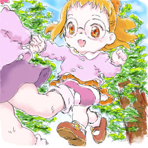
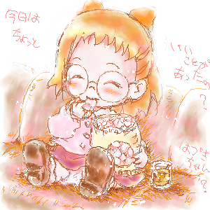
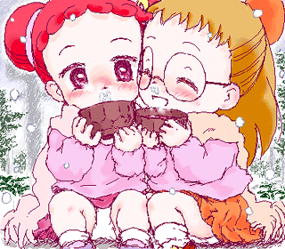
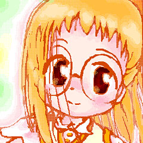

04年07月10日SAT.
今週に、北の閉鎖病棟から南の開放病棟へ移り、
デイケアという共同生活訓練みたいなのを受けつつ
院内生活、そろそろようやく退院まであと一歩という所です。
頑張れ私！（笑）
ナイショ２話も見られました。３話も見られるかも？
頑張れそうっ♪
第２話、おんぷとももことみんな、過去を掘り下げるお話ながらも
もっと、も～っとどれみ世界を広げていくような展開…
ナイショ２発目っ、よかったです～ｖ
そしてナイショED、
ひざまくら。さんも同意見ですかー；
ああ、言われてみれば動きのハジケっぷりが木星返りさんのそれ…(^^
あいちゃんとどれみちゃんの感じなんかすごい印象近いです～
むしろ自分にはエブプルさんのなよっとしたくずれおんぷちゃん＆
明後日の方向いてたりする止め絵が入る流れとかゆで小屋さんGIFアニメのMIX～
という印象でしたｗ
やぁやぁー私の一番はそれよりもっ
どれみちゃんのそばにいてずっと目をキラキラ（…ギラつかせている?ｗ）
うれしそうなはづきちゃん嬉しいｖ(*^^*)
夕焼けおわかれ悲しくなりそうなトコロで「じゃあ また明日」明るくっ♪
いいなぁ…ｖ ‥また明日ってお別れできる人がいるっていいな‥
04年07月10日SAT.


躁鬱の起伏をなだらかに、良い状態に持っていくためにただいま私、入院中です。
今日はネット上でこの事を御報告するためと家族と過ごす時間を作るための外出日(自宅へ)です。
本当はナイショをスカパ視聴されてる方と盛り上がりたかったですが、ままならず…
退院したときは多分DVD待ちの方と一緒にナイショでお話し出来るかも？
そのときはよろしくですｖ
04年06月26日SAT.
ナイショ、知り合いの家で観せてもらいました。ｱﾘｶﾞﾀｲｺﾄﾃﾞｽ(´｀)
一言だけ、
クオリティ素晴らしいです。
早く躁鬱の気を良くして、出来れば発売日に
DVDも買っていけるようになりたいと思えるナイショでした‥♪
がんばれそうｖ がんばる♪
（～DVD待ちの人への配慮のため、同日18:15頃に文章の一部を削除・修正前）
03年12月26日FRI.
１８きっぷとコミケカタログ(CD-ROM版)買ってきました～♪
どの電車に乗るかとか、経費どのくらいになるかとか、あとサークルチェック。
実際にこうして準備進めていくとなんかワクワクしてきますｖ
一般参加は初めてなんです。ひとりで電車に乗って行くのも初めて。
どんな経路がいいか、「あっこの日はこう乗ってここに泊まれば…♪」とか
なんか…楽しいんですね、こういうのって。
以前の…サークル参加してた時とかは、出発する直前まで全然気持ちに余裕なくて
こんな気持ちになること、ありませんでした。
初参加からずっとつづけてスペース当選という幸運に、参加を重ねるたび辛くなるばかりで…
…うん。ごめんなさい（＾＾；
ああ、なんかすごいぶりのコミケ。
上手く行けて、ずっと会ってみたかったひとたちと会えるといいなぁ。
03年12月11日THU.
HTMLじか打ちはやっぱりめんどくさい～(^^;
自由にレイアウトしたいけど、テーブルタグで
配置するとどこが何なのか分からなくなる；
ＨＰ作成ソフトをちょっと調べてみよう…
ポポロ、きれいって言われて嬉しい女の子、
照れながらの男の子、っていうの…きゃーｖ
初恋の時な自分が思い出されてどきどきでした（*＾＾*;）


パソをネットに繋いではじめて描いた
お絵描き掲示板絵。
２時間経たないうちにお返事をくれた、
私のことを知っててくれたひと…
この出来事が私にはとてもうれしかったの
（更新日 03年11月6日THU.）
元サイズ絵 2000年9月の絵(…たしか＾＾；)
{kind=link}
{kind=link}